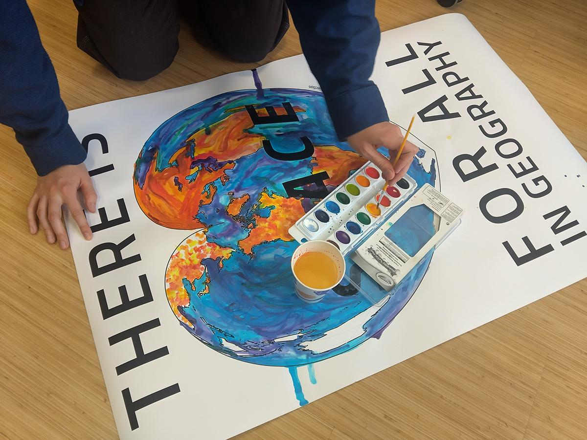
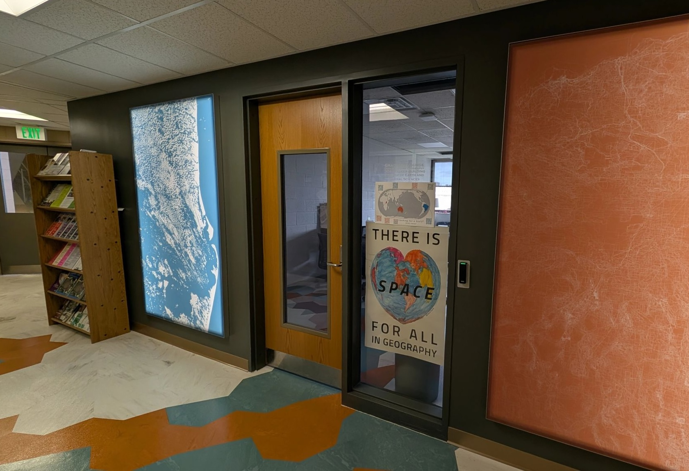

Following the 2024 election, Penn State Geography professor and feminist scholar Lorraine Dowler wanted to develop a sign for the geography department letting everyone know that all are welcome in geography. Through a hallway conversation, I let her know that there was a map projection in the shape of a heart, and she thought this would be the perfect sign for the geography department.
With the help of Fritz Kessler, a projection expert, we develop a map in the Stab-Werner projection centered on State College. I added a few simple map elements digitally, but I wanted to focus on creating a map using tangible methods. I selected watercolor, which I thought would work well because watercolor can be difficult to control, and therefore colors would flow together in harmony rather than be constrained by strict lines and binaries.


As someone who is primarily a digital mapper, but who experiences mild eye and back strain from sitting at a computer all day, this map was also an opportunity to take a break from screens, as well as a creative break. I had no idea how the watercolors would react with the ink or the heavy printer paper. The paper warped, and different colors looked different over the dark ink. Additionally, some colors overflowed, and others left drips. However, all of the results of the design help to reinforce that the department is fluid, creative, and welcoming.
The map is now proudly displayed in the front office of the Penn State Geography department, with the simple (and punny) message “There is Space for All in Geography”.